Geschiedenis
Pierre Marchant brug
De brug inspireert!
Dansvoorstelling Birds van Seppe Baeyens / Wim Vandekeybus / Ultima Vez op de autoloze zondag van 2021
Tussenbruggen
Alex Deforce nam in 2022 een sound walk op die je kan beluisteren terwijl je wandelt van de Pierre Marchantbrug naar de Paepsem brug en terug.
Beluister hiervoorstellen van studenten achitectuur en urbanisme Ugent + schilderij oliver slosse


 9.jpeg)


 3.jpeg)


 1.jpeg)